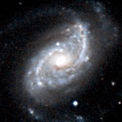
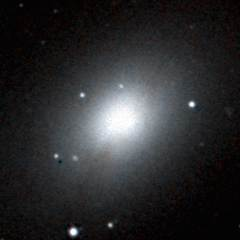
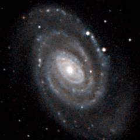
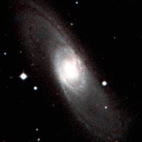
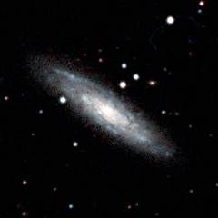
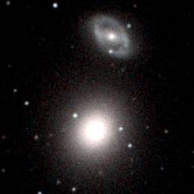
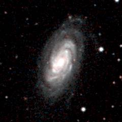
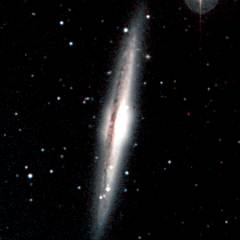
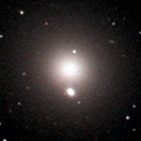

The Virgo III Groups form a very obvious line of galaxy groups on the left side of the Virgo cluster. The gravitational pull of the Virgo cluster has stretched this collection of groups into a long chain of galaxies which extends across 40 million light years of space.
Below - three galaxies in the Virgo III groups. NGC 5248 (left) is a spiral galaxy and one of the brightest galaxies in this region. NGC 5363 (centre) is a lenticular galaxy with a faint lane of dust passing through the middle of it. NGC 5364 (right) is a spiral galaxy with very long spiral arms.
|  |  |  |
| NGC 5248 | NGC 5363 | NGC 5364 |
This is a list of the main Virgo III Groups. The largest group here is the NGC 5746 group which lies next to the NGC 5638 Group and both groups could be considered to be one large group with twenty major galaxies.
1 2 3 4 5 6 7 8
Name Equatorial Blue Type Size Size RV
Coordinates Mag (') kly km/s
RA Dec
NGC 5248 Group Distance = 65 million ly
UGC 8575 13 35.8 +08 58 15.2 Irr 2.6 50 1448
UGC 8614 13 37.4 +07 39 13.2 Irr 3.5 65 1339
NGC 5248 13 37.5 +08 53 11.0 SBbc 5.6 105 1437
NGC 5364 Group Distance = 70 million ly
NGC 5300 13 48.3 +03 57 12.7 SBc 3.5 70 1452
NGC 5348 13 54.2 +05 14 14.1 SBbc 3.5 70 1723
NGC 5356 13 55.0 +05 20 13.3 SBbc 2.9 60 1647
NGC 5360 13 55.6 +04 59 14.9 Sa 1.3 25 1444
NGC 5363 13 56.1 +05 15 11.0 S0 4.9 100 1407
NGC 5364 13 56.2 +05 01 11.4 Sbc 6.0 125 1511
NGC 5506 Group Distance = 85 million ly
IC 976 14 08.7 -01 10 14.3 S0 1.5 40 1794
UGC 9057 14 10.2 -02 35 14.3 SBcd 2.9 70 1840
NGC 5496 14 11.6 -01 09 13.7 SBcd 4.4 110 1801
NGC 5506 14 13.2 -03 12 12.9 Sa 2.6 65 2075
NGC 5507 14 13.3 -03 09 13.5 S0 1.6 40 2247
NGC 5566 Group Distance = 80 million ly
NGC 5560 14 20.1 +04 00 13.2 SBb 3.5 85 1975
NGC 5566 14 20.3 +03 56 11.4 SBab 6.6 155 1753
NGC 5569 14 20.5 +03 59 15.4 SBc 1.4 35 2019
NGC 5574 14 20.9 +03 14 13.5 E 1.4 35 1902
NGC 5576 14 21.1 +03 16 12.0 E 2.9 65 1732
NGC 5577 14 21.2 +03 26 13.7 Sbc 3.1 70 1733
UGC 9215 14 23.5 +01 44 13.5 SBc 2.2 50 1634
NGC 5638 Group Distance = 85 million ly
NGC 5636 14 29.7 +03 16 14.5 SBa 1.4 35 1913
NGC 5638 14 29.7 +03 14 12.4 E 2.1 55 1904
UGC 9310 14 30.0 +03 13 15.0 Sd 2.0 50 2086
IC 1024 14 31.5 +03 00 14.6 S0 1.3 30 1689
NGC 5668 14 33.4 +04 27 12.5 Scd 2.8 70 1815
UGC 9380 14 34.6 +04 16 15.0 Irr 1.9 45 1923
NGC 5746 Group Distance = 85 million ly
UGC 9299 14 29.6 -00 01 14.6 SBcd 1.8 45 1782
NGC 5658 14 32.5 +00 18 15.2 S0 1.4 35 1908
NGC 5690 14 37.7 +02 17 12.7 Sc 3.3 80 1981
NGC 5691 14 37.9 -00 24 13.1 SBa 1.9 45 2101
NGC 5692 14 38.3 +03 25 13.1 S? 0.9 20 1808
NGC 5705 14 39.8 -00 43 14.4 SBcd 2.1 55 1989
NGC 5713 14 40.2 -00 17 12.1 SBbc 2.8 70 2114
NGC 5719 14 40.9 -00 19 13.3 SBab 3.1 75 1968
NGC 5725 14 41.0 +02 11 14.7 SBcd 1.0 25 1852
UGC 9469 14 41.7 -10 48 15.8 Irr 1.6 40 2062
UGC 9482 14 42.8 +00 40 16.0 Scd 1.2 30 2025
NGC 5740 14 44.4 +01 41 12.7 SBb 2.6 65 1791
NGC 5746 14 44.9 +01 57 11.4 SBb 6.9 170 1940
NGC 5750 14 46.2 -00 13 12.6 Sa 2.9 70 1905
NGC 5775 Group Distance = 75 million ly
IC 1066 14 53.0 +03 18 14.6 Sbc 1.2 25 1785
IC 1067 14 53.1 +03 20 13.3 SBb 2.0 45 1786
NGC 5770 14 53.2 +03 58 13.7 S0 1.3 25 1664
NGC 5774 14 53.7 +03 35 13.2 SBcd 2.8 60 1773
NGC 5775 14 54.0 +03 33 12.4 SBc 3.8 85 1883
NGC 5846 Group Distance = 85 million ly
NGC 5813 15 01.2 +01 42 11.6 E 4.2 105 2139
NGC 5831 15 04.1 +01 13 12.5 E 2.2 55 1857
NGC 5846 15 06.5 +01 36 11.1 E 3.8 95 2003
NGC 5846A 15 06.5 +01 36 13.0 E 0.5 10 2344
NGC 5854 15 07.8 +02 34 12.7 S0 2.7 65 1877
NGC 5864 15 09.6 +03 03 12.6 S0 2.5 60 2025
NGC 5869 15 09.8 +00 28 13.0 S0 2.3 60 2295
UGC 9746 15 10.3 +01 56 14.8 Sbc 1.4 35 1928
UGC 9751 15 11.0 +01 26 16.6 Sc 1.1 30 1749
UGC 9760 15 12.0 +01 42 15.8 Scd 2.2 55 2206
Other major Virgo III galaxies:
NGC 5334 13 52.9 -01 07 12.8 SBc 3.9 90 1661
NGC 5470 14 06.5 +06 02 14.0 Sb 2.6 60 1285
UGC 9169 14 19.8 +09 22 14.3 Sm 4.0 95 1521
NGC 5584 14 22.4 -00 23 12.5 SBc 3.2 75 1888
IC 1014 14 28.3 +13 47 13.9 SBd 2.6 60 1514
NGC 5645 14 30.7 +07 17 13.1 SBcd 2.6 60 1600
NGC 5669 14 32.7 +09 53 13.1 SBc 4.1 95 1600
NGC 5701 14 39.2 +05 22 12.1 S0 3.6 85 1730
UGC 9500 14 45.4 +07 52 ? Sm 2.8 65 1903
NGC 5792 14 58.4 -01 05 12.5 SBb 6.5 150 2130
NGC 5806 15 00.0 +01 53 12.5 SBb 3.0 70 1559
NGC 5838 15 05.4 +02 06 12.0 E 3.8 90 1544
NGC 5921 15 21.9 +05 04 11.8 SBbc 4.4 100 1649
|
Column 1: The usual name of the galaxy.
Column 2: The Right Ascension for epoch 2000.
Column 3: The Declination for epoch 2000.
Column 4: The blue apparent magnitude of the galaxy.
Column 5: The galaxy type: E=Elliptical, S0=Lenticular, Sa,Sb,Sc,Sd=Spiral,
SBa,SBb,SBc,SBd=Barred Spiral, Sm,SBm,Irr=Irregular.
Column 6: The angular diameter of the galaxy (arcminutes).
Column 7: The diameter of the galaxy (thousands of light years).
Column 8: The recessional velocity (km/s) of the galaxy relative to
the cosmic microwave background.
References:
Giuricin G, Marinoni C, Ceriani L, Pisani A, (2000), Nearby optical galaxies:
selection of the sample and identification of groups. Astrophys J, 543, 178.
Garcia A, (1993), General study of group membership. II. Determination of nearby
groups. Astron Astrophys Supp, 100, 47.
Fouqué P, Gourgoulhon E, Chamaraux P, Paturel G, (1992), Groups of Galaxies within
80 Mpc, Astron and Astrophys Supp, 93, 211.
Tully R, (1982), The Local Supercluster, Astrophys J, 257, 389.
The HyperLeda Database, (2003).
Below - three galaxies in the Virgo III groups. NGC 5566 (left) is a barred spiral galaxy with a central ring of stars and long, open spiral arms. NGC 5577 (centre) is a much more normal spiral galaxy. NGC 5638 (right) is a large elliptical galaxy. Above it is NGC 5636 - a spiral galaxy consisting of a central bar surrounded by a ring of stars.
|  |  |  |
| NGC 5566 | NGC 5577 | NGC 5638 |
Below - three more galaxies in the Virgo III groups. NGC 5740 (left) is a normal spiral galaxy in the NGC 5746 group. NGC 5746 (centre) is the brightest galaxy in this group and probably the largest galaxy among all of the Virgo III groups. NGC 5846 (right) is a large elliptical galaxy. Below it, in the same field of view, is a much smaller elliptical galaxy - NGC5846A.
|  |  |  |
| NGC 5740 | NGC 5746 | NGC 5846 |
| Properties of the Virgo III groups | ||
|---|---|---|
| Equatorial Coordinates | RA=13h30m to 15h20m | Dec=-5° to +10° |
| Galactic Coordinates | l=330° to 360° | b=+45° to +70° |
| Supergalactic Coordinates | L=110° to 125° | B=+10° to +35° |
| Distance to the groups | 65 to 85 million light years | |
| Number of large galaxies | 75 | |
| Alternative name for the groups | Virgo III Cloud | |